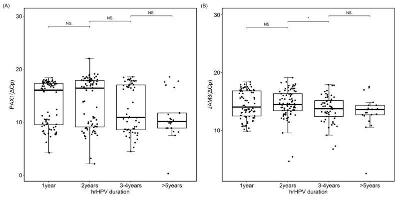
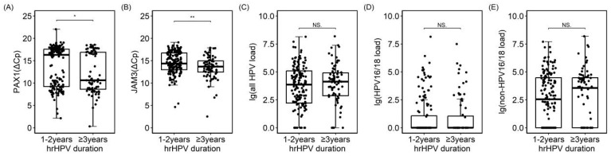
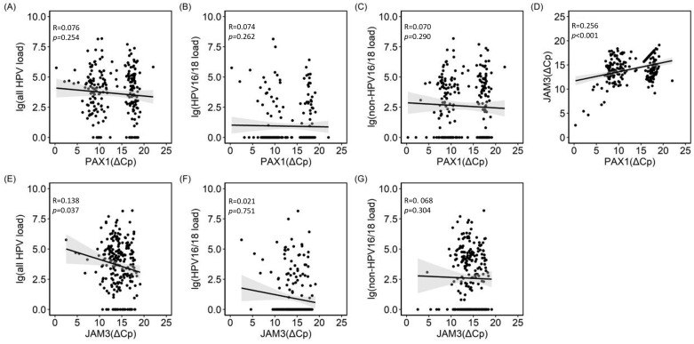
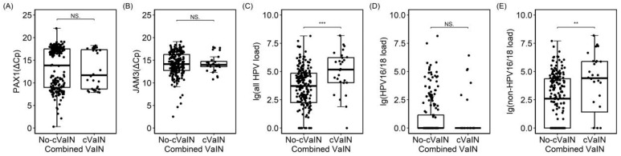

1Background & Objective
- Gap: epigenetic & viral-load changes during persistent HPV infection (no high-grade cervical lesion) are poorly understood.
- Idea: PAX1/JAM3 methylation may accumulate as evidence of infection duration before precancer arises.
- Objective: compare methylation & VL by infection duration (<3 y vs >3 y) and link to vaginal lesions.
2Study Design & Cohort
231
persistent HPV women
48.9
mean age >3 y
45.1
mean age <3 y
PAX1/JAM3 qPCR+
HPV VL (BMRT)+
colposcopy + histology
- Setting: PKUPH colposcopy clinic, Mar–Dec 2023; persistent = same genotype ≥1 y.
- Inclusion: persistent HPV, no CIN2+ on biopsy; excluded ASC-H/HSIL cytology, prior cancer, hysterectomy.
- Unscreened: 81.8% (189/231) had no previous screening.
- Grouping: duration 3 y chosen via stratified analysis of JAM3 methylation change.
- Outcome: 28 concurrent VaIN; more frequent when infection >3 y.
- VL analyses: total / HPV16-18 / non-16-18 type-specific.
28
concurrent VaIN
81.8%
never screened
3 y
cut-off
VL reported type-specific per 10,000 cells (BMRT).
Persistent = same genotype ≥1 y; genotype change excluded.
3Methylation Rises With Infection Duration

Fig. 2 PAX1 (A) & JAM3 (B) higher after 3 y (*P<0.05).

Fig. 3 By duration — methylation rises; VL no trend.
- Cumulative evidence: PAX1–JAM3 correlate (P<0.001) — marker of duration before precancer.
4Viral Load & Vaginal Lesions

Fig. 4 VL–methylation correlation (JAM3–total VL P=0.037).

Fig. 5 VaIN: higher total VL, driven by non-16/18 (**P<0.01).
- VL biomarker: higher with concurrent vaginal lesions, mainly non-16/18.
- VaIN: 28 concurrent cases; more common when infection >3 y.
5Clinical Implications
- 3-year threshold: methylation rises only after >3 y — a monitoring timepoint for persistent infection.
- Dual-site check: persistent HPV women should be assessed for concurrent vaginal lesions; VL guides it.
- Before precancer: methylation provides early cumulative evidence, enabling earlier intervention.